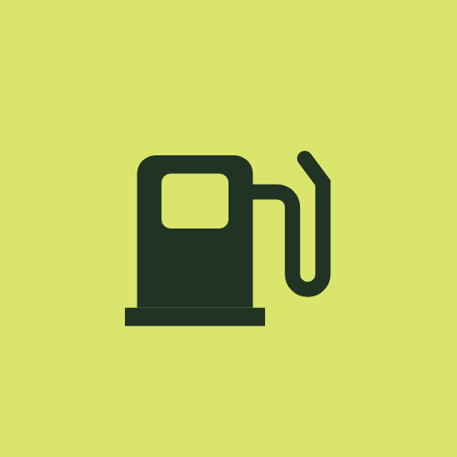

Yakıt DefteriÜcretsiz hesaplayıcı
Yakıt tüketimi hesaplama
Aracının 100 km'de kaç litre yaktığını ve bir yolculuğun sana kaça mal olacağını hesapla. Benzin, dizel ve LPG için aynı hesap geçerli.
100 km'de kaç litre?
Yolculuk yakıt masrafı
Her dolumda elle hesaplamak zorunda değilsin. Yakıt Defteri dolumlarını kaydeder, tüketimi ve aylık masrafı kendisi hesaplar. Reklam yok, hesap açmak yok, kayıtlar telefonunda kalır.
Google Play'den indirYakıt tüketimi nasıl hesaplanır?
En doğru sonucu tam depo yöntemi verir:
- Depoyu tamamen doldur ve kilometre sayacını not et.
- Her zamanki gibi kullan.
- Depoyu yine tamamen doldur. Aldığın litreyi ve yeni kilometreyi not et.
- İki kilometre arasındaki farkı bul. Bu, aldığın yakıtla gittiğin yoldur.
Formül: tüketim (L/100 km) = litre ÷ km × 100
Örnek: 540 km gittin ve depoyu 34,2 litreyle doldurdun. 34,2 ÷ 540 × 100 = 6,33 L/100 km. Litresi 44,90 ₺ ise km başına maliyet 34,2 × 44,90 ÷ 540 = 2,84 ₺.
Kısmi dolumda ne yapmalı?
Depoyu tam doldurmadıysan o dolumu tek başına hesaplama. Bir sonraki tam depoya kadar aldığın tüm litreleri topla ve o aradaki toplam kilometreye böl. Tek bir kısmi dolumla yapılan hesap gerçekte olduğundan çok düşük ya da çok yüksek çıkar.
Göstergedeki ortalama neden farklı?
Araçtaki yol bilgisayarı genellikle tahmin yapar ve çoğu araçta gerçek tüketimden biraz düşük gösterir. Pompadan aldığın litreyle yapılan hesap gerçek değeri verir.
LPG'li araçta nasıl hesaplanır?
LPG ve benzini ayrı hesapla. Her yakıt için kendi litresini aynı aradaki kilometreye böl. LPG tüketimi benzinden genellikle %15–25 daha yüksektir, ama litre fiyatı düşük olduğu için km başına maliyet daha azdır.
Km başına maliyet nasıl bulunur?
km başına maliyet = tüketim (L/100 km) × litre fiyatı ÷ 100. Bakım, sigorta ve vergiyi de eklemek istersen bir dönemdeki tüm araç masraflarını o dönemde gidilen kilometreye böl.